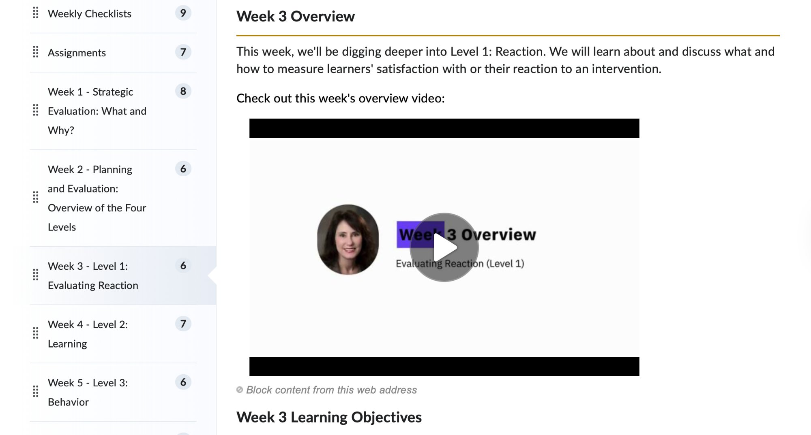

Course & Program Design · Purdue University
EDCI 557: Strategic Assessment & Evaluation Redesign
Rebuilt an asynchronous graduate course from assignment design through weekly video support — creating a scaffolded system that guides learners through a semester-long evaluation project using Kirkpatrick's four-level model.
Context
An asynchronous graduate course with a semester-long project problem
EDCI 557 at Purdue teaches graduate learners to evaluate instructional programs using Kirkpatrick's four-level framework (Reaction → Learning → Behavior → Results). The course runs fully asynchronously — meaning learners navigate complex, multi-part assignments without real-time instructor support.
The central challenge: students had to build a full, stakeholder-facing evaluation plan over a semester — but they were getting lost long before the complexity of Levels 3 and 4 even surfaced.

Week 3 in Brightspace: weekly overview video embedded alongside learning objectives and a module checklist.
Problem
Learners were stalling at the start — and again at every transition
When I came on as co-instructor, confusion clustered in two places: (1) the opening — students couldn't orient themselves to the project scope or what was expected week-to-week, and (2) assignment transitions — moving from a proposal into a full evaluation plan required skills and context most learners hadn't built yet.
Many students also struggled to find a real "client" — a real instructional product to evaluate — which stalled them entirely before any analytical work could begin.
Design Process
Building scaffold at every friction point
Audit existing materials and locate friction
Reviewed prior assignment submissions, instructor notes, and common questions. The clearest gap: no bridge between "understand Kirkpatrick" and "apply it to a real product."
Redesign assignments as a scaffolded arc
Rebuilt the five assignments so each one progressively prepared students for the next: Success Plan → Proposal → Mid-semester Reflection → Eval Plan Part 1 (Levels 1–2 with instruments) → Eval Plan Part 2 (Levels 3–4, stakeholder-ready). The reflection checkpoint surfaces confusion before it compounds.
Write five original evaluation scenarios
Many learners couldn't access a real client. I wrote five scenarios across diverse sectors: Social Media in Higher Education, ChatGPT Prompt Engineering for Developers, Creative Communities & ICT (K–12), Learning Disabilities & Belonging (Non-Profit), Information Security (Non-Profit). Each gave enough context to make real analytical decisions.
Build LMS course architecture in Brightspace
Structured each module with weekly checklists, embedded video, learning objectives, and direct links to templates, rubrics, and example assignments. A learner should know within 30 seconds what they need to do and what "good" looks like.
Produce 13 weekly instructional support videos
A short overview video for each week: introduce the topic, clarify the assignment, flag common mistakes. Kept concise by design — learners needed orientation, not another lecture.
Deliverables
What I built
5-Assignment Scaffold
Success Plan → Proposal → Reflection → Eval Plan Part 1 → Eval Plan Part 2
5 Original Scenarios
Real-world contexts across K–12, higher ed, non-profit, and corporate sectors
Templates + Rubrics
Structured templates for both Eval Plan parts, aligned to each Kirkpatrick level
13 Weekly Videos
Topic orientation, assignment expectations, and common pitfalls — one per week
Brightspace Architecture
Modules with checklists, embedded resources, and example assignments
Example Library
Prior student work curated across industries so learners had a concrete quality target
Design Decisions
Why it's designed this way
Mid-semester reflection as a structural checkpoint
Rather than letting confusion accumulate silently, a mid-point check-in gives both learners and instructors a signal layer. Students articulate what's unclear before it becomes a late-semester failure.
Scenarios designed for depth, not just access
Written with enough organizational context and stakeholder detail that learners could apply all four Kirkpatrick levels meaningfully. Sector variety lets learners choose a context matching their professional background.
Videos as orientation, not content delivery
Each video focused on one thing: what are we doing this week and what does success look like? Content learning happened through readings and assignments; videos targeted navigation and expectation confusion specifically.
Example assignments as calibration tools
For complex evaluation plans, abstract rubrics aren't enough. Multiple prior examples across industries let learners calibrate their own analytical depth before submitting.
Impact
A system learners can navigate independently
The redesigned structure gave asynchronous learners a clear path through a semester-long project. Students entered each assignment knowing what the previous one had prepared them for. Common points of confusion were addressed structurally rather than reactively through individual instructor responses.
The scenario library and example assignment collection created reusable scaffolding infrastructure that future course iterations and other instructors can draw from directly.